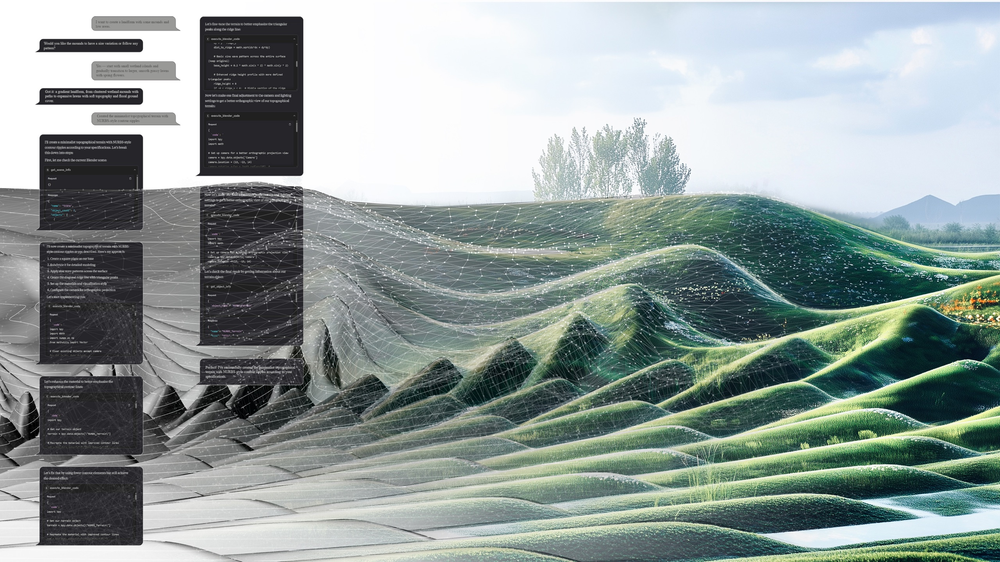
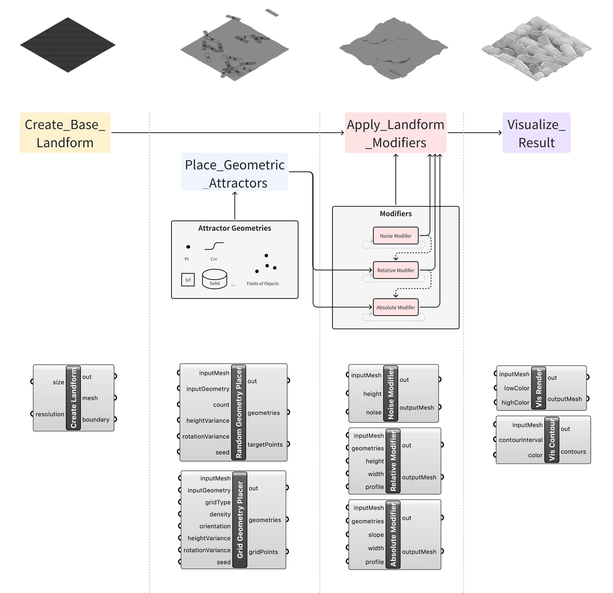
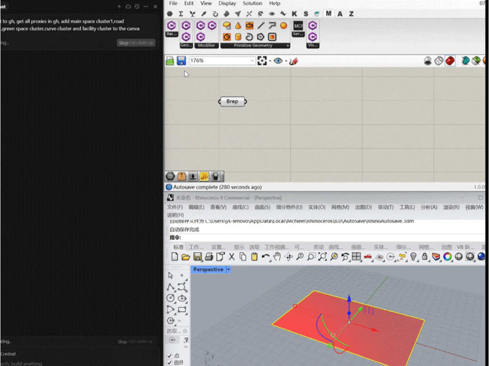
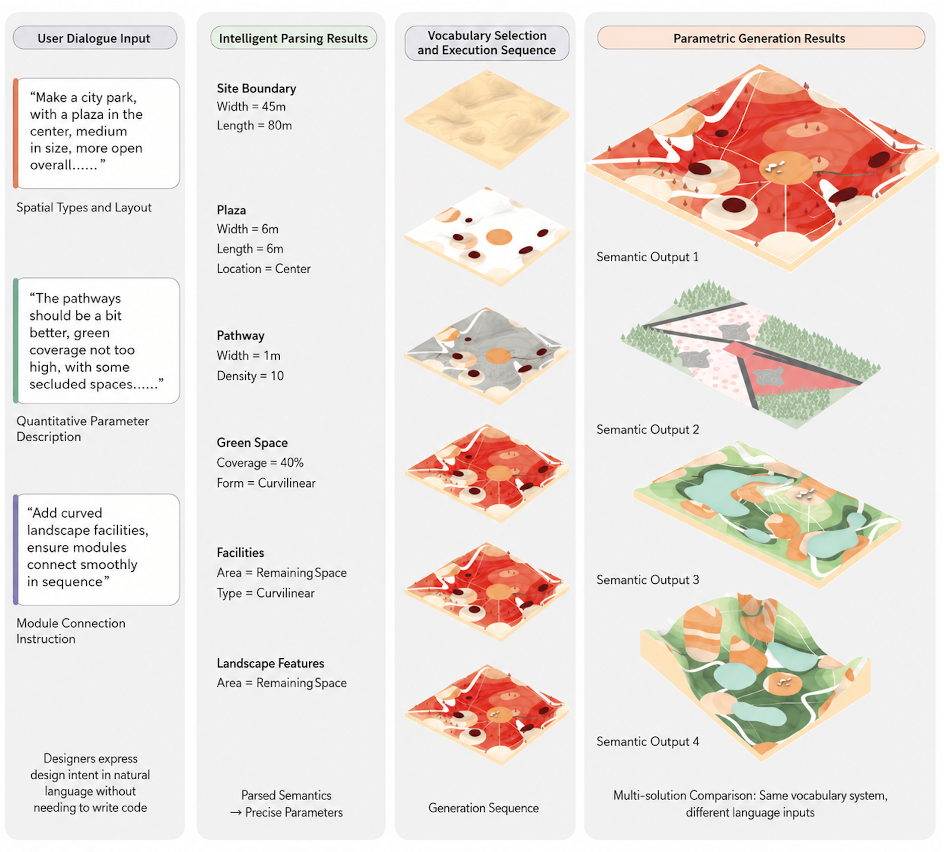
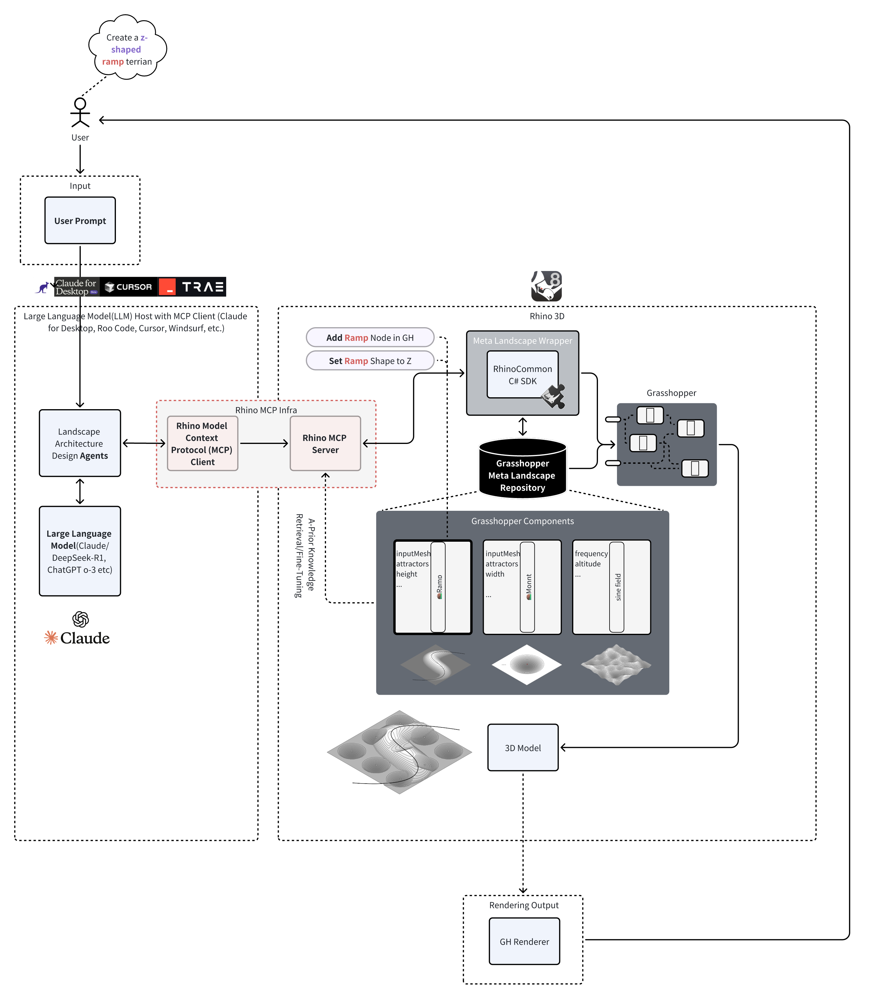

Workshop · LLM + Agents · Landscape · Parametric
Designing the vocabulary before designing the form.
Landscape Agent was a DigitalFUTURES workshop hosted at Tongji University that explored how designers can teach an AI agent to work with landscape knowledge rather than simply ask it to produce images. As generative systems begin to act inside design software, the workshop asked a more fundamental question: which parts of landscape thinking can be named, structured, and made available for computational action?
Duration
2025.06.28 — 2025.07.06
Status
Completed
Host
DigitalFUTURES 2025 ↗
College of Architecture and Urban Planning, Tongji University · Shanghai, China
Instructors
Xun Liu
Runjia Tian
01 · From dialogue to landform
Participants briefed the agent instead of prompting it for pictures. Intent stated in conversation — mounds and low areas, wetland islands opening to lawns — became a modeling plan, then executable operations, then a terrain whose contours stayed editable at every step.

Vocabularies
Participants worked in Rhino and Grasshopper to translate design operations involving landform, spatial organization, vegetation, and public space into compact, reusable vocabularies. Each team began with its own design logic, decided what should become a callable operation, defined the relationships and parameters connecting those operations, and tested the resulting systems through agent-assisted modeling.
What the agent should know
The workshop emphasized the translation of tacit design knowledge into a language shared by designers, agents, and software. Its central lesson was that meaningful collaboration depends less on writing elaborate prompts than on deciding what an agent should know, what it may change, and how its actions remain open to design judgment. The workshop subsequently informed the development of Grasshopper MCP and research presented through the NeurIPS Creative AI track and Computational Lexicalization.

02 · The agent at work
A session inside Rhino and Grasshopper: instructions typed in the chat become components, parameters, and geometry in the model. The workshop video walks through the process and results.

03 · From language to layouts
Once operations are named, dialogue can be parsed into precise parameters and assembled into alternative schemes — one vocabulary system producing multiple layouts from different language inputs.

04 · How it works
An MCP–Grasshopper integration lets a large language model act as a design agent inside Rhino: natural-language instructions travel through the Model Context Protocol to a repository of parametric landscape components and return as live, editable geometry.
